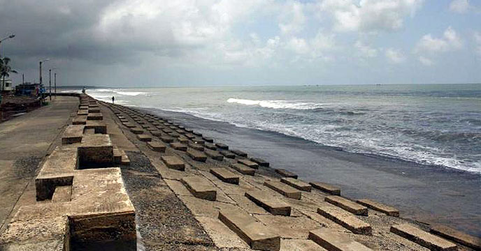
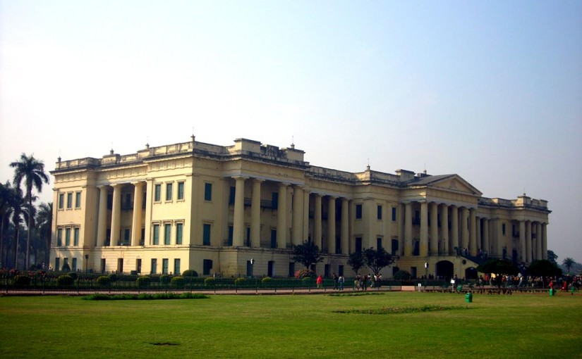

Bengal At A Glance

DARJEELING
The queen of the hills is a Himalayan city in the Indian state of West Bengal. It is internationally renowned as a tourist destination for its spectacular view of Mt.Kanchandzonga, along with its tea industry and the Darjeeling Himalayan Railway, a UNESCO World Heritage site.

DIGHA
Digha is a seaside resort town in the state of West Bengal, India. It lies in Purba Medinipur district and at the northern end of the Bay of Bengal. It has a low gradient with a shallow sand beach. It is the most popular sea resort in West Bengal.

BISHNUPUR
Bishnupur was ruled under the Gupta period by local Hindu kings who paid tribute to Samudra Gupta.Following a long period of obscurity, where the land oscillated between being a minor independent principality and a vassal state. The land is also called Mallabhum after the Malla rulers of this place.

SUNDARBAN
The Sundarbans is a mangrove area in the delta formed by the confluence of Ganges, Brahmaputra and Meghna Rivers in the Bay of Bengal. It spans from the Hooghly River in India's state of West Bengal to the Baleswar River in Bangladesh.

DOOARS
The Dooars or Duars are the alluvial floodplains in northeastern India that lie south of the outer foothills of the Himalayas and north of the Brahmaputra River basin. This region is about 30 km wide and stretches over about 350 kmfrom the Teesta River in West Bengal to the Dhanshiri River in Assam.

MURSHIDABAD
Murshidabad is a town in the Indian state of West Bengal. It is located on the eastern bank of the Hooghly River, a distributary of the Ganges River. It forms part of the Murshidabad district. During the 18th-century, Murshidabad was an early modern financial center. It was the capital of the Bengal Subah in the Mughal Empire for seventy years, with a jurisdiction covering modern-day Bangladesh and the Indian states of West Bengal, Bihar and Orissa.